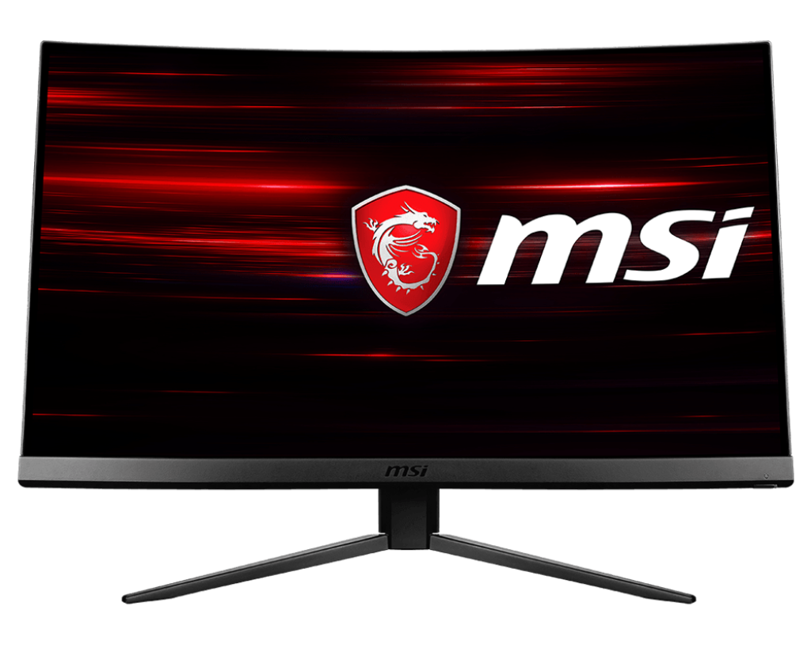

Monitör
Monitör, bilgisayarın görsel çıktısını kullanıcıya sunan temel birimlerdendir. Farklı boyut, çözünürlük ve panel teknolojileri sayesinde günlük kullanım, profesyonel grafik çalışmaları ya da oyun deneyimi gibi çeşitli senaryolara uygun modeller bulunmaktadır.
Monitörün Temel Özellikleri
Monitör seçerken dikkat etmeniz gereken birçok özellik vardır. İşte öne çıkan bazı unsurlar:
1️⃣ Çözünürlük
Monitörün sunduğu piksel sayısı, görüntü netliğini belirler. Full HD, 4K veya daha yüksek çözünürlük seçenekleri mevcuttur.
2️⃣ Panel Teknolojisi
IPS, TN veya VA gibi panel tipleri, renk doğruluğu, kontrast oranı ve görüş açılarını etkiler. IPS paneller genellikle daha geniş görüş açısı ve üstün renk üretimi sağlar.
3️⃣ Yenileme Hızı
Yenileme hızı (Hz), monitörün saniyede kaç kez görüntüyü güncellediğini gösterir. Yüksek yenileme hızları, özellikle oyunlarda daha akıcı bir görüntü deneyimi sunar.
4️⃣ Tepki Süresi
Tepki süresi, bir pikselin renk değiştirme hızını belirtir. Düşük tepki süreleri, hareketli sahnelerde bulanıklığı azaltır.
Monitör Seçerken Dikkat Edilmesi Gerekenler
Seçiminizi yaparken göz önünde bulundurmanız gerekenler:
✔ Çözünürlük: İhtiyacınıza uygun görüntü kalitesi sağlıyor mu?✔ Panel Tipi: Renk doğruluğu ve geniş görüş açısı beklentilerinizi karşılıyor mu?
✔ Yenileme Hızı ve Tepki Süresi: Oyun veya profesyonel kullanıma uygun performansı sunuyor mu?
✔ Bağlantı Seçenekleri: HDMI, DisplayPort gibi çeşitli bağlantı türlerini destekliyor mu?
Monitör Türleri
💻 1. Standart Monitörler
Günlük ofis kullanımları ve ev kullanımı için ideal, temel özelliklere sahip modeller.
🎮 2. Oyun Monitörleri
Yüksek yenileme hızı ve düşük tepki süresi ile öne çıkan, oyun deneyimini optimize eden modeller.
🖥 3. Profesyonel Monitörler
Yüksek renk doğruluğu, geniş renk gamı ve detaylı görüntü ayarları sunan, grafik tasarım ve video düzenleme gibi profesyonel uygulamalar için tercih edilen modeller.